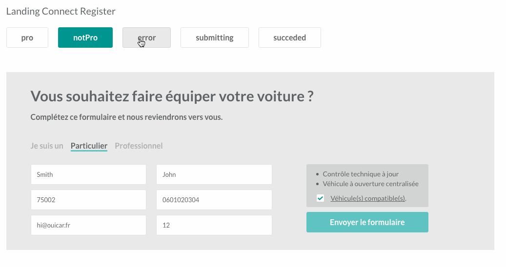

La philosophie Elm en Javascript
Juin 2016 - Paris.js
Guillaume Claret
Front End Developer @ouicar
Théophile Kalumbu
Lead Front End Developer @ouicar
Frontend OuiCar
- Environ 75.000 lignes de Javascript
- Surtout du React / es6 mais encore du jQuery
- Nombreux développeurs, certains partis
Une des solutions
S'inspirer du langage Elm.

Qu'est-ce que Elm ?
Un langage :
- purement fonctionel
- typé
- compile vers Javascript
Qu'est-ce que Elm ?
Une architecture :

Exemple
Compteur
type alias Model = Int
type Msg = Increment | Decrement
update : Msg -> Model -> Model
update msg model =
case msg of
Increment -> model + 1
Decrement -> model - 1
view : Model -> Html Msg
view model =
div [] [ button [ onClick Decrement ] [ text "-" ]
, div [] [ text (toString model) ]
, button [ onClick Increment ] [ text "+" ] ]Apports
- débogage à la compilation (types)
- composabilité
- maintenabilité
- maîtrise des side-effects (ex: Appel API)
Comment se rapprocher de cette philosophie en JS ?
On casse tout et on passe à ELM ?
On a décidé de passer à REDUX
et son écosystème
Apports
Redux evolves the ideas of Flux, but avoids its complexity by taking cues from Elm.
Documentation Redux.
Avantages
- On reste sur un language connu et une stack maitrisée
- Un écosystème riche et mature ( oui ça fait qu'1 ans mais bon )
- Les développeurs sont content
- Le business aussi
View
En Elm :
view : Model -> Html Msg
view model =
div [] [ button [ onClick Decrement ] [ text "-" ]
, div [] [ text (toString model) ]
, button [ onClick Increment ] [ text "+" ] ]View
En Javascript : avec le DOM :
Objet avec mutations :/
View
En Javascript : avec React :
class Counter extends Component {
render() {
return (
{this.props.counter}
);
}
}React
La vue devient une fonction :
component : Props -> HTML
Virtual DOM avec diff pour optimiser le rendu :

Composition
Storybook
github.com/kadirahq/react-storybook Model
En Elm :
-- Counter
type alias Model = Int
-- Car
type alias Model =
{ brand : String,
model : String,
km : Int
}
Model
En Javascript :
Pas de typage :/.
Model
En Javascript + Flow :
// Counter
type Model = number;
// Car
type Model = {
brand: string,
model: string,
km: number
};
Typage avec Flow
- Typage du javascript avec des annotations
- Détection des erreurs à la compilation
- Très bonne integration avec l'IDE Nuclide
- Ça reste du Javascipt au final
- Typage graduel
Flow
Nuclide
Update
En Elm :
type Msg = Increment | Decrement
update : Msg -> Model -> Model
update msg model =
case msg of
Increment -> model + 1
Decrement -> model - 1Update
En Javascript : Action + Reducer
Update
En Javascript : Action + Reducer
Les apports
- Prédictibilité du code
- Lisibilité et Débogage facilité
Redux DevTools
Comment garantir l'immutabilité ?
- Object.freeze(obj) ? (ne gère pas plusieurs niveaux)
- Immutable JS proposé par Facebook
- Eslint avec eslint-plugin-immutable
eslint-plugin-immutable
Ce qui nous reste à explorer
- Commands et Tasks ELM ou Promises
- Redux Thunk Middleware ou Redux SAGA
- Subscriptions ( Click, WebSocket, Clavier )
- Communication avec le monde non-Flow Decode et API
Merci.
Blog technique :
ouicar.github.io